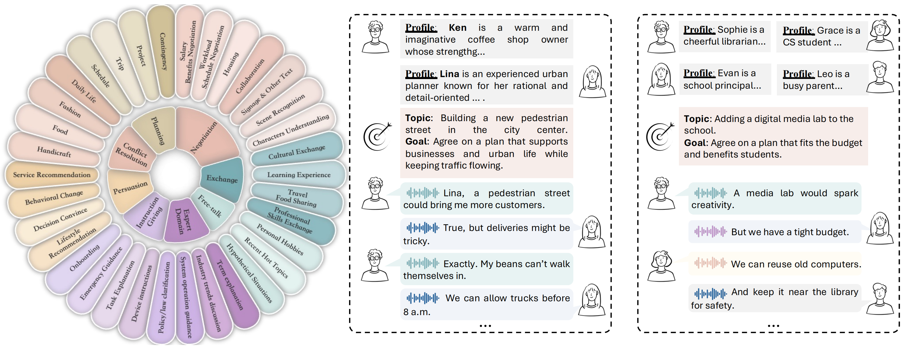
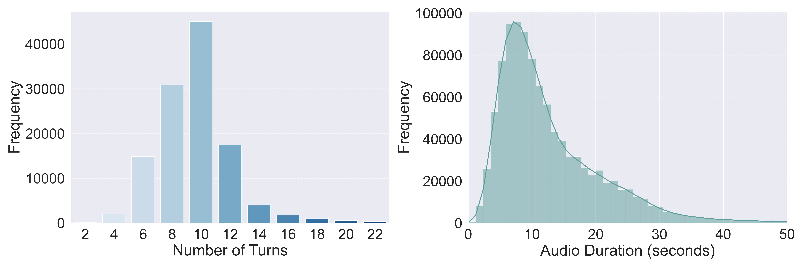
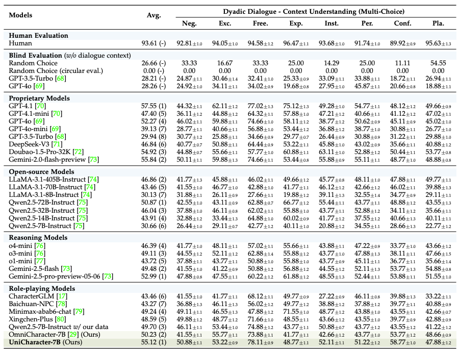
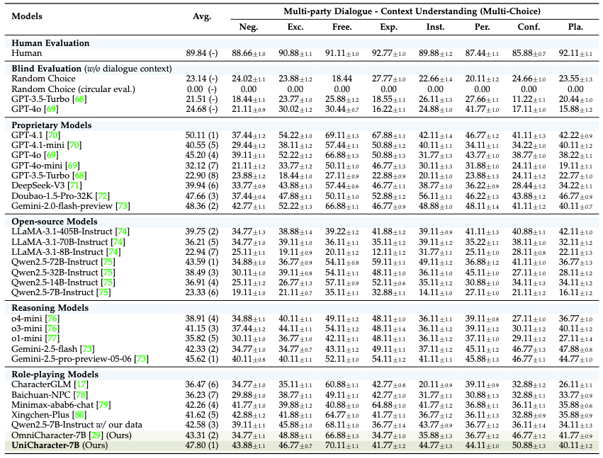

Headline Results
OmniCharacter++ Benchmark — Dataset Scale
OmniCharacter++ covers large-scale role profiles, topic-driven conversations, and expressive speech responses. It is designed to probe role consistency, contextual understanding, multimodal communication, and adaptive interaction in realistic open-world scenarios.
| Set | Dialogue Type | #Characters | Avg. Turns/Conv. | #Dialogues | #Speech Hours |
|---|---|---|---|---|---|
| Train | Dyadic | 10,277 | 10.00 | 88,474 | 2867.94 |
| Train | Multi-Party | 10,277 | 15.05 | 29,543 | 1051.66 |
| Test | Dyadic | 10 | 9.89 | 185 | 6.96 |
| Test | Multi-Party | 10 | 16.72 | 334 | 15.20 |
| Total | - | 10,377 | 12.92 | 118,536 | 3941.76 |



Context Understanding — Multi-Choice Evaluation
Models are evaluated on dyadic and multi-party dialogue scenarios using role-related multi-choice QA with circular evaluation. OmniCharacter-7B is highlighted as the role-playing model trained on OmniCharacter++ data, and the tables compare it against proprietary, open-source, reasoning, and role-playing baselines.

The benchmark evaluates both one-to-one role-playing and multi-character conversations. This stresses context tracking, speaker intent, goal progress, and relationship consistency across longer, more realistic interactions.
OmniCharacter++ pairs role profiles and dialogues with synthesized speech responses, enabling evaluation beyond text-only behavior: fluency, consistency, emotional expression, clarity, appropriateness, and immersion.
Scenarios are built around concrete topics and goals, so models must balance persona consistency with task progress, dialogue coherence, and realistic role-specific decisions.
